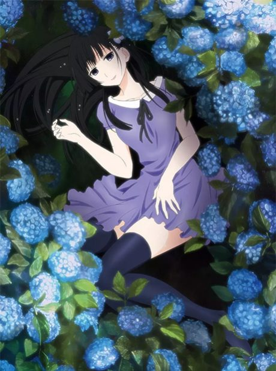
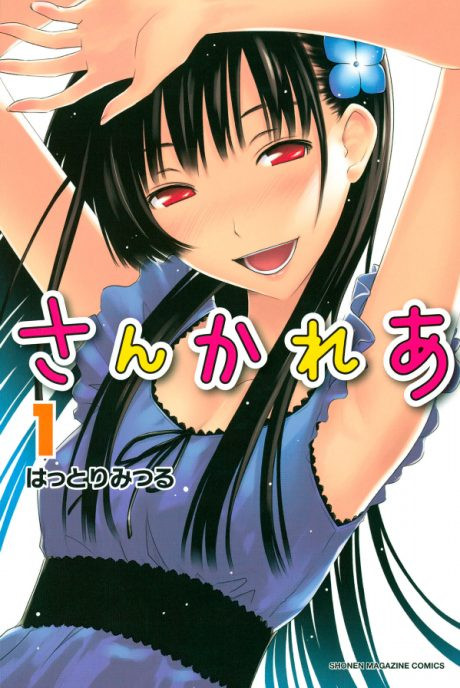
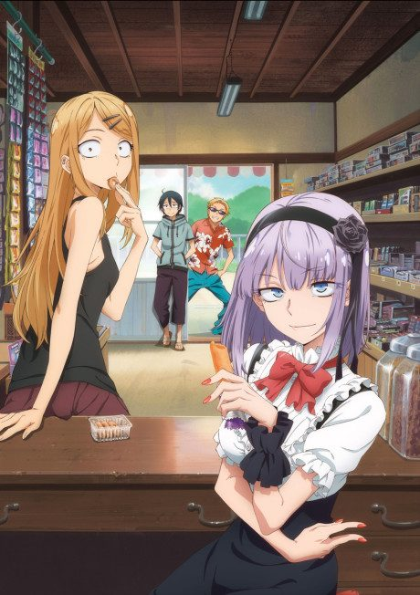
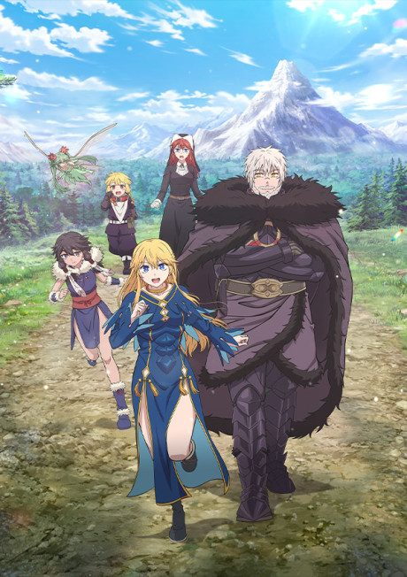

Sankarea: Undying Love
さんかれあ
Chihiro, a boy obsessed with zombies, is drawn to Rea, a girl who becomes one after an accident.
After the anime, read the manga from Chapter 22.
7.0AniList score
—Animeter, no votes yet
12episodes
Rate it or report where you stopped
Anime finished. Where does the manga pick up?
Start at Chapter22
The anime ends at chapter 21, so start at chapter 22 (volume 5). The anime's final episode adds an anime-only cliffhanger, and the manga is finished.
12159 end
Season 1Start reading here
More like Sankarea: Undying Love
Manga Ch. 337.0
Hokkaido Gals Are Super Adorable! Original8.4
Original8.4
 Manga Ch. 408.4
Manga Ch. 408.4
 Manga Ch. 2307.5
Manga Ch. 2307.5
 Done8.1
Done8.1
 Unclear8.3
Unclear8.3
 Manga Ch. 847.3
Manga Ch. 847.3

Manga Ch. 1276.4 Manga Ch. 1148.1
Manga Ch. 1148.1
Manga Ch. 296.5
Actually, I Am Unclear7.0
Unclear7.0

Unclear6.9